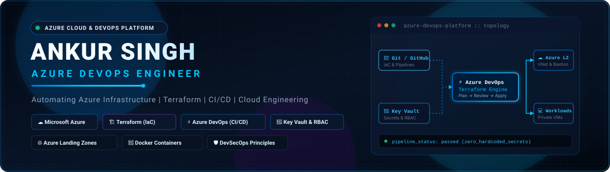

About Me • Tech Stack • Architecture Workflows • Featured Projects • GitHub Activity • Contact
👨💻 About Me
I am an Azure DevOps Engineer with around 3 years of hands-on experience architecting, provisioning, and automating cloud infrastructure on Microsoft Azure. My core focus is building reliable, repeatable, and secure cloud environments through Terraform (Infrastructure as Code) and automated CI/CD pipelines.
What I Do:
- Cloud Infrastructure Provisioning: Architecting modular Azure infrastructure spanning Virtual Networks (VNets), dedicated subnets, Azure Bastion hosts, network security groups (NSGs), and isolated compute resources.
- Infrastructure as Code (IaC): Designing DRY, scalable Terraform child and root modules utilizing dynamic
for_eachresource maps, strict variable typing, and remote state governance. - CI/CD Automation: Building robust, multi-stage pipelines in Azure DevOps (YAML) and GitHub Actions with automated formatting, linting, policy validation, speculative plan generation, and gated production rollouts.
- Containerization: Containerizing applications using Docker with multi-stage builds, layer caching, vulnerability scanning, and integration with Azure Container Registry (ACR).
- Cloud Security & DevSecOps: Enforcing the Principle of Least Privilege, role-based access control (Azure RBAC), Managed Identities, zero-hardcoded secrets via Azure Key Vault, and shift-left scanning with TFLint, tfsec, and Gitleaks.
- Troubleshooting & Observability: Diagnosing deployment bottlenecks, network routing anomalies, pipeline failures, and infrastructure drift to maintain high platform availability.
Core Philosophy: Treat infrastructure as software: version-controlled, modular, tested before deployment, and deployed with zero manual intervention.
🛠️ Core Technical Competencies
| Domain | Technologies & Tools |
|---|---|
| Cloud Platform |
|
| Infrastructure as Code |
|
| CI / CD & Automation |
|
| Containers & Registries |
|
| Cloud Security & DevSecOps |
|
| OS & Scripting |
|
| Foundational Knowledge |
(Conceptual understanding of pods, services, deployments, and cluster architecture; limited project exposure) |
🏛️ Architecture Workflows
1. Terraform Infrastructure Provisioning Workflow
2. CI/CD Application & Container Workflow
3. Azure Enterprise Landing Zone Topology
🚀 Featured Projects
1. Azure Enterprise Secure Landing Zone (Terraform)
Description: An enterprise-grade, modular Azure Landing Zone engineered with Terraform. Implements a secure network topology with isolated compute workloads, administrative ingress guarded by Azure Bastion, and dynamic runtime secret injection from Azure Key Vault without storing credentials in source code.
- Zero Public IP Exposure: Virtual machines reside entirely in private subnets with zero internet-facing public IPs.
- Dynamic Secret Injection: Credentials fetched dynamically via
data.azurerm_key_vault_secret. - Secure Management: Management access handled strictly via Azure Bastion over TLS.
- Modular Scalability: Clean separation between reusable child modules and root environment configurations.
2. Azure DevOps Terraform CI/CD Automation Pipeline
Description: A multi-stage continuous integration and delivery pipeline automating the linting, validation, security analysis, planning, and rollout of Terraform infrastructure code across environment stages.
- Automated Validation: Enforces
fmt -check,init, andvalidateon every PR. - Shift-Left DevSecOps: Scans for hardcoded tokens (Gitleaks) and IaC misconfigurations (tfsec, TFLint).
- Speculative Plans: Generates execution plans for team review before merging.
3. Azure Remote Terraform State Management & State Locking
Description: Enterprise state management architecture designed to eliminate local state files, guarantee team concurrency protection, and protect state data using Azure native controls.
terraform {
backend "azurerm" {
resource_group_name = "rg-terraform-state-mgmt"
storage_account_name = "sttfstatelz001"
container_name = "tfstate"
key = "landing-zone.preprod.tfstate"
use_azuread_auth = true
}
}4. Docker Build & Deployment Automation Pipeline
Description: Standardized containerization and deployment workflow implementing multi-stage Docker builds, image hardening, vulnerability scanning, and automated publishing to Azure Container Registry (ACR).
📊 GitHub Metrics & Activity
|
|
|
|
|
|
🤝 Connect & Collaborate
| Platform | Channel | Link |
|---|---|---|
| Professional Profile | Connect on LinkedIn | |
| Direct Inquiries | ankursingh571999@gmail.com | |
| GitHub | Technical Portfolio | @ankursinghdevops |
| Focus Area | Core Expertise | Azure Infrastructure Provisioning, Terraform IaC, YAML Pipelines |
Designed with precision for modern cloud engineering. Built with Microsoft Azure & HashiCorp Terraform standards.